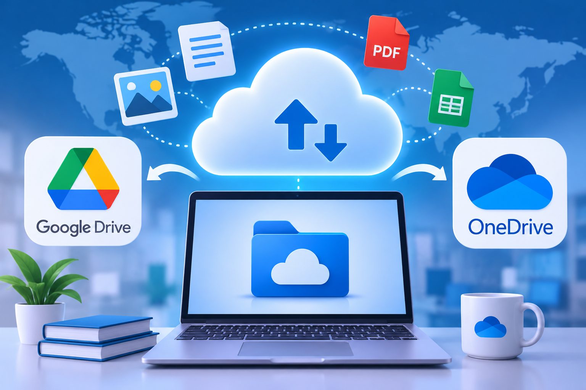

اعداد الطالبة: يارا عبد الحميد إبراهيم محمد حليمة
الفرقة: الثانية
الرقم الجامعي: 2502143
إشراف: د.مها زغلول
تعد المنصات السحابية من أهم التقنيات الحديثة التي تعتمد ع الانترنت، حيث تساعد ع تخزين الملفات والوصول إليها من أي مكان، كما تسهل مشاركة المعلومات وتوفر الوقت والجهد.

هي خدمات الكترونية تتيح للمستخدمين حفظ الملفات والصور والمستندات عبر الانترنت بدلا من تخزينها ع حهاز واحد فقط
تعتمد المنصات السحابية ع الانترنت حيث يقوم المستخدم برفع ملفاته الي مساحة تخزين الكترونية ثم يستطيع الوصول اليها من أي جهاز متصل بالانترنت
منصة تتيح تخزين الملفات والصور والمستندات ومشاركتها مع الآخرين بسهولة.
خدمة تستخدم لحفظ الملفات عبر الانترنت والوصول إليها من أحهزة مختلفة مع إمكانية مشاركة المستندات والتعاون ف تعديلها
| وجه المقارنة | Google Drive | Microsoft OneDrive |
|---|---|---|
| التخزين | حفظ الملفات والصور والمستندات | حفظ الملفات والمستندات |
| مشاركة الملفات | سهولة مشاركة الملفات مع الآخرين | إمكانية مشاركة الملفات مع الآخرين |
| التعاون | التعاون في تعديل المستندات | التعاون في تعديل الملفات |
| الاستخدام | التعليم والعمل | التعليم والعمل |
تياعد المنصات السحابية ع حفظ الملفات والوصول اليها بسهولة من أي مكان، وتوفر الوقت والجهد.
تعد المنصات السحابية من التقنيات المهمة التي تسهل تخزين الملفات ومشاركتها والوصول اليها من أي مكان وتساعد ع التطوير والعمل مع ضرورة الحفاظ ع آمن البيانات.